USModernist and its sister site NCModernist are digital archives
that make the largest archive of modernist architecture in the
United States easier to explore and understand. The site is a
community resource that documents, preserves, and promotes
modern architecture across the country. The goal of the redesign
was to make the website easier to use, present a cleaner, more
compelling digital archive, and better reflect the
organization’s mission and values.
The challenge
Both sites were originally built in Microsoft Expression Web,
which left them feeling outdated, cluttered, and difficult to
maintain. The architecture and content were valuable, but the
site lacked a clear, modern organization and didn’t make it easy
for visitors to browse the archive or find what they were
looking for.
Design research
I started by studying examples of the client’s desired modernist
aesthetic and the patterns they wanted to preserve. The research
confirmed that the archive needed to feel thoughtful, clean, and
rooted in modernist design language without becoming too cold or
overly minimal.
What I changed
I largely reorganized the navigation menu and the content layout
to make the archive much easier to navigate. Each page now
includes a clearer hierarchy, more breathing room, and stronger
visual structure, helping visitors understand the site and move
through it with confidence.
Interactive Map
I began building an ArcGIS database for NCModernist to hold the
data collected over the years about modernist houses in North
Carolina, including each home’s location, architecture style,
and key details. That information will eventually power an
interactive map so users can explore the archive by region and
better understand the patterns of modern architecture across the
state. This portion of the project was handed off to the client
for further development.
Before & after
A closer look at what changed across the desktop and mobile
versions of the site. The After images show my redesign as
delivered, before the sites were later changed by another
developer.
Home Page
Bolder titles, line separators, and a black, white, and red
palette drawn from the logo.
Before
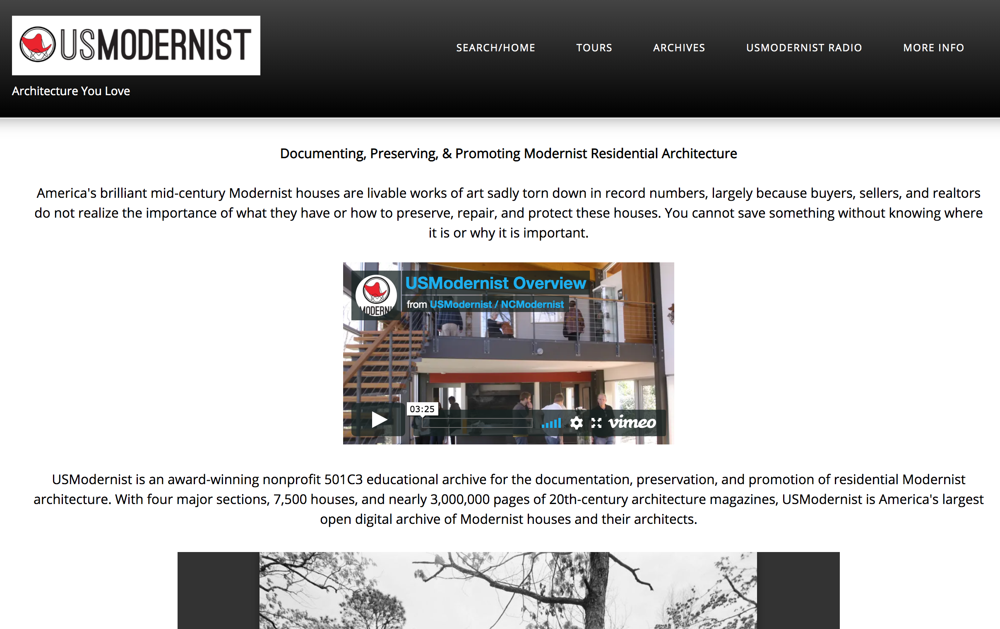
After
Architect Page
Updated fonts, bolder titles, and bold line separators bring the
content pages in line with the new look.
Before
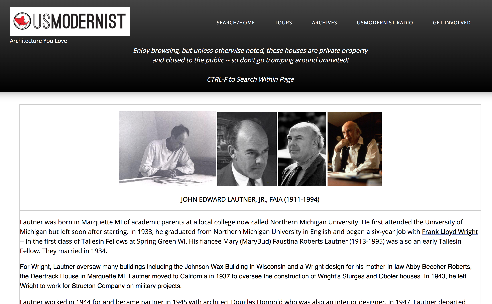
After
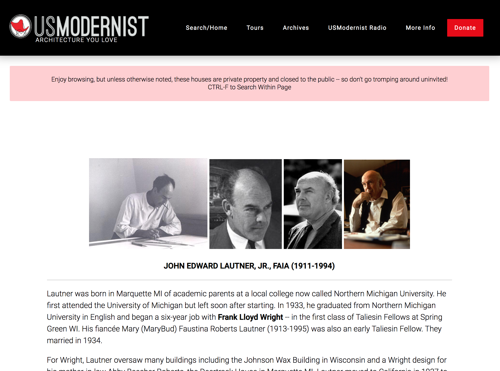
On mobile
Before
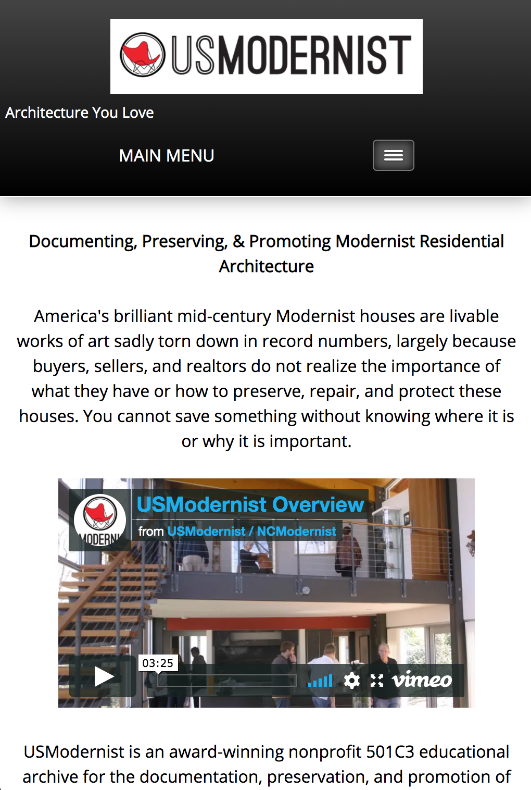
After
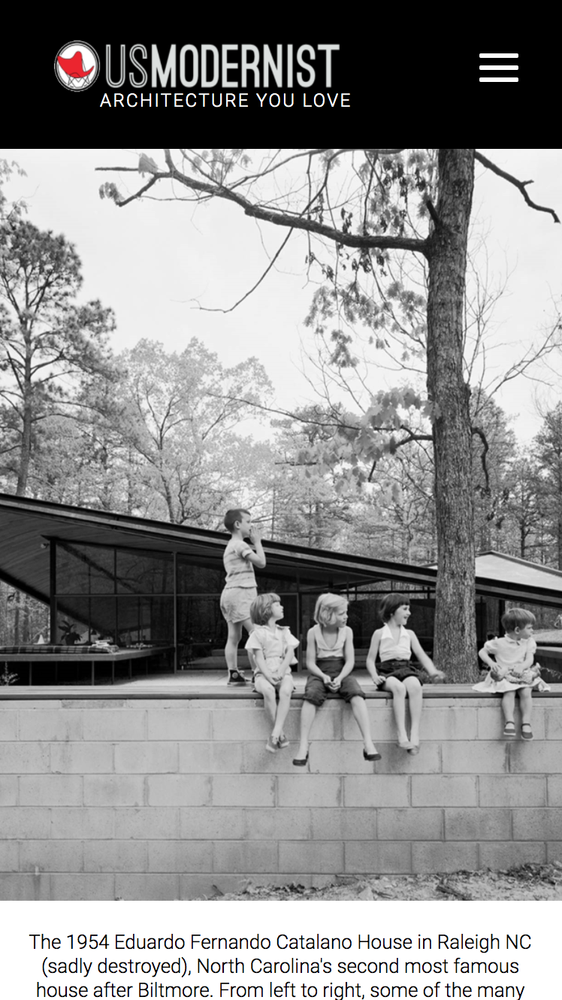
Home
New nav in new black, white, and red palette.
Before
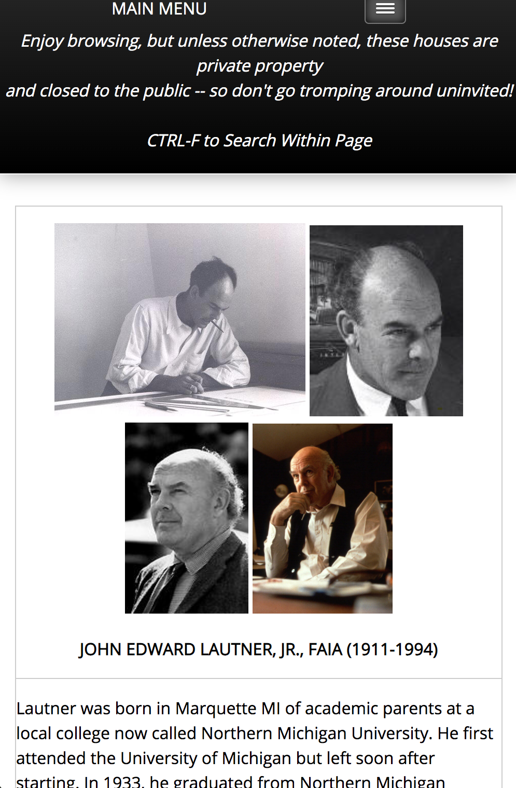
After
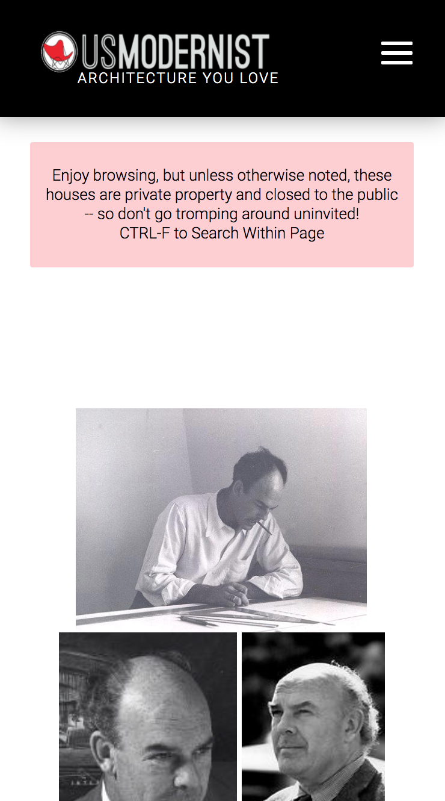
Architect page
Bolder titles and a cleaner layout on small screens.
Before
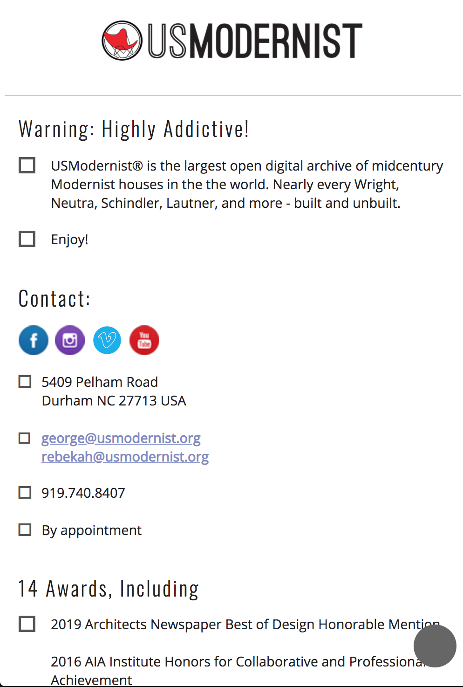
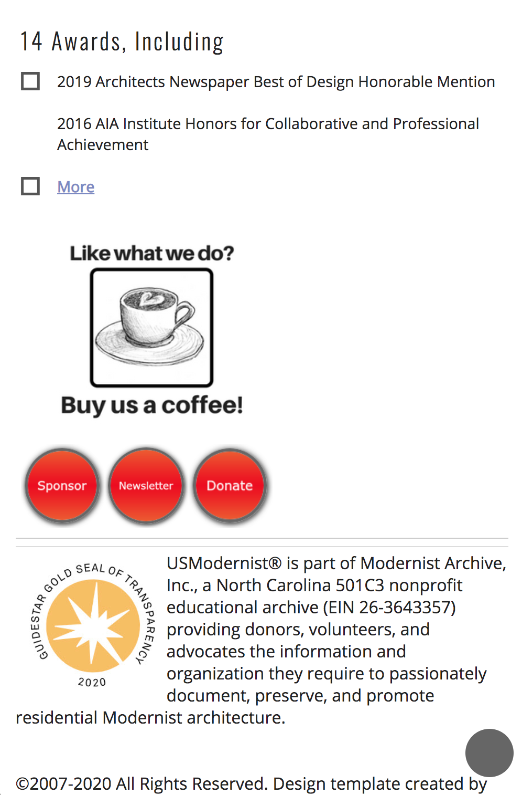
After
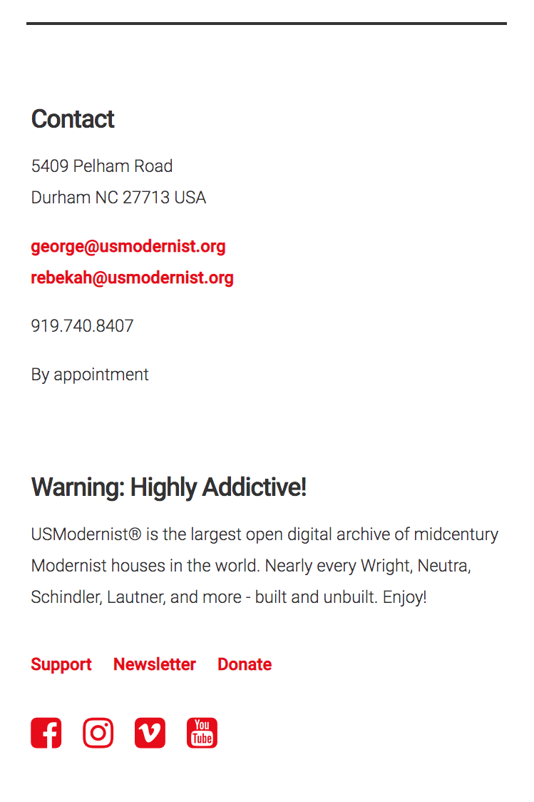
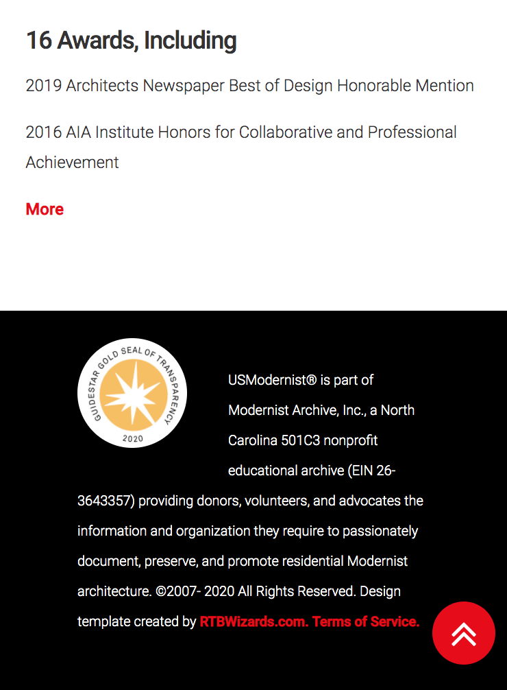
Navigation & footer
Reorganized so both respond to any screen size and flow
more naturally.